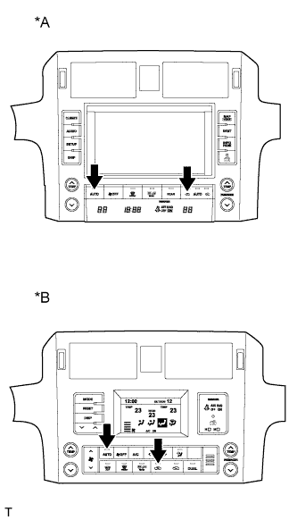
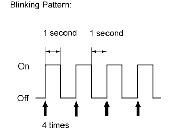
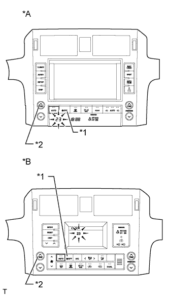

AIR CONDITIONING SYSTEM > DIAGNOSIS SYSTEM |
| DESCRIPTION |
Air conditioning system data and Diagnostic Trouble Codes (DTCs) can be read through the Data Link Connector 3 (DLC3) of the vehicle. When the system seems to be malfunctioning, use the intelligent tester to check for malfunctions and perform troubleshooting.
| CHECK DLC3 |
Check the DLC3 (Click here).
| LIST OF OPERATION METHODS |
By operating each of the air conditioning control switches as shown in the diagram below, it is possible to enter diagnostic check mode.
| INDICATOR CHECK |
|  |
| *A | w/ Navigation System |
| *B | w/o Navigation System |
Turn the engine switch off.
Turn the engine switch on (ACC) and wait at least 5 seconds.
Press and hold the air conditioning control "AUTO" switch and "recirculation/fresh" switch simultaneously, and turn the engine switch on (IG). Continue holding the 2 switches until panel diagnosis mode begins.
|  |
Check that all indicators turn on and off 4 times in succession at 1 second intervals.
| DTC CHECK (SENSOR CHECK) |
|  |
| *A | w/ Navigation System |
| *B | w/o Navigation System |
| *1 | OFF Switch |
| *2 | Driver Temperature Up Switch |
Start the engine and warm it up.
Perform the indicator check.
Read the code displayed on the panel.
If the codes are difficult to read because they change automatically, operate the driver temperature up switch to display the codes one at a time so that they can be read easily. The items are displayed one by one each time the driver temperature up switch is operated.